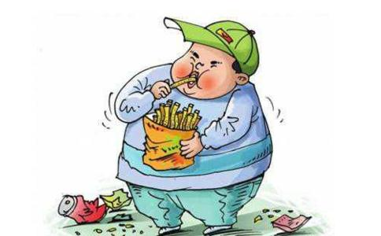

关于这方面，有一则非常典型的事例，就发生在我身边。我来和大家谈一谈。我有个叔叔，家住无锡。为人豪爽热情，在一家工厂负责运货，因为平时工作认真，肯吃苦，得到大家的尊重和领导的肯定。工作也从原来的临时工转成了正式工，还分到了房子。家有三个儿子，都很懂事，对父母也很
有一次他来我们家，晚上吃饭，我们都吃好了，我叔叔又到楼下买了一只烤鸭，一瓶酒，一直吃到晚上十点。当时，我在看电视，他对我说他平时不爱看电视，唯一的爱好就是喝酒，在家晚饭几乎天天要吃到十点钟，酒足饭饱后就上床睡觉了，早晨很早就起床，忙家务，上班。每天到也很快活，身体也很好。由于他性格豪爽，广交朋友，所以也常常请人到家里吃饭。我叔叔常常帮别人运货，别人就请他喝酒，有次他开玩笑说，别人后来都不请他吃饭了，送他一条香烟作为感谢，因为他太能吃了。我工作后，有一次我叔叔来到我们家请我爸给他看病。（我爸是医生）他说近几个月，吃饭时有呕吐感，而且越来越严重。我们当时没有在意，可是等检查结果出来，我们都大吃一惊。是咽喉癌，而且已经扩散了。
后来，在医院开刀，手术是成功的，回去后，只能吃果汁，稀粥等。几个月下来，瘦了很多。但是病情还是在发展，于是又作了一次手术，换了一个人造的食道，手术过程很困难，最终还是很幸运，成功完成了。我们去医院看叔叔。当时的景象我一辈子都忘不了，以前一百八十多斤的身体只剩下九十多斤，瘦的皮包骨，脸色很难看，太让人心痛了。吃饭对我叔叔来讲就是一种折磨，一方面肚子很饿，可是一吃东西就要吐。后来又回无锡养病了。那年的春节我到无锡看过叔叔，还陪他到楼下散步，以前性格很开朗的叔叔，当时精神状态不太好，我当时已经
现在我叔叔去世已经快十年了，我有时常常想起他，我把他的故事讲出来，希望给大家一个借鉴，也希望以此功德回向我叔叔，希望他早生善道，业障消除，阿弥陀佛……
附录：若遇饮食无度者。说饥渴咽病报 这一句好懂，贪吃。现在社会许许多多的怪病，从前没听说过的，病从哪里来的？谚语说得很好，「病从口入，祸从口出」。前面口业，那就造祸，灾祸都从口业出来的。疾病都从饮食，病从口入。我这一次在香港，香港有个同修告诉我，他说这是真人真事，就发现在香港。这是社会新闻，大众都知道。是前几年，有母女两个人喜欢吃海鲜，每一天到海湾都买活的，她倒不是自己抓，买活的回来杀、回来吃。到晚年这个母亲就得了一个病，病的时候就跟大家讲：「好大的水，到处都是泥沙，在房间里头乱爬，好像往岸上爬」，就是海鲜那种样子。以后身上就腐烂，就死掉了。死掉之后，她这女儿也得这样的病，以后没有法子，也到处去求神、问卜，遇到一个法师。法师就告诉她，他说：「你是一生
现在人，每一个人都很注重身体
饮食我们要注意，特别是现代的饮食。现代人心不好，其他地方我不了解，台湾情形我知道。台湾的猪六个月就杀了，喂猪的饲料都是化学药物，促进猪的发育，牠长得快，六个月就杀了。所以牠肉里头，都是一些毒素在里头，不正常。再说从前家畜都是养在外边，没有杀的时候，牠的生活很自由、很
我们今天也算是有缘，遇到同修们介绍，才知道臭氧可以能够化解农药。所以我们现在吃的生菜，是经过臭氧处理，把里面这些毒的东西统统分解，所以比外面东西要干净多了。这个可以大力推广，我要找制造机器的工厂，希望他能够大量的生产，我们想办法来帮他传播。有个健康的饮食，清净的心理，慈悲的心理，身心健康，没有一法不是